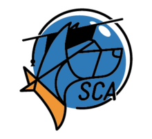

SCA:Signal Cartel Academy: Difference between revisions
Vega Blazar (talk | contribs) No edit summary |
Vega Blazar (talk | contribs) No edit summary |
||
| Line 1: | Line 1: | ||
{{SCA}}The Signal Cartel Academy is the educational division of Signal Cartel. | {{SCA}}The Signal Cartel Academy is the educational division of Signal Cartel. The Academy was established on 23 November 2019 (YC 121) by [[User:Xalyar|Xalyar]]. | ||
The aim of the Signal Cartel Academy (SCA) is to lay out a simple and efficient framework that enables access to the wealth of knowledge, skills, and expertise found within the | === Purpose === | ||
The aim of the Signal Cartel Academy (SCA) is to lay out a simple and efficient framework that enables access to the wealth of knowledge, skills, and expertise found within Signal Cartel through the exchange of information between Signaleers. The Academy accomplishes this goal by facilitating the meeting of potential mentors and students, where ''anyone'' can volunteer their time and knowledge - thus becoming a '''mentor''' - for the benefit of anyone - thus becoming a '''student''' - who feels they need guidance. Ultimately, SCA is a crowdsourced endeavor that relies on everyone's participation to flourish. | |||
=== Division Management === | === Division Management === | ||
| Line 9: | Line 10: | ||
* [[User:Sloopy Noopers|Sloopy Noopers]] - Administrator | * [[User:Sloopy Noopers|Sloopy Noopers]] - Administrator | ||
=== | === Communication === | ||
The Academy uses two modes of communication: | |||
* [https://forums.eve-scout.com/category/43/signal-cartel-academy-sca SCA section of the EvE-Scout Forums] - where Signaleers post their education/training announcements and requests | |||
* EvE-Scout Enclave Discord server channels | |||
** <code>#sca-campus</code> - a place to share your knowledge and skills and learn from others | |||
** <code>#sca-auditorium</code> - the default voice channel for any SCA session | |||
=== How To === | |||
'''Instructions:''' head to the [https://forums.eve-scout.com/category/43/signal-cartel-academy-sca SCA section] on the Forums, and make a public new thread, listing what you intend to mentor, when you are available (tomorrow, today, in a week time) and what the requirements for your mentorship session will be. Instructions on how to format the forum posts can be found in the [[SCA:Session_Posting_Guidelines_for_the_Forums|relevant article]] . | |||
The other side of the equation works the same way. Anyone seeking for help with a specific topic will be able to post similar posts on the Forums, asking for someone with the relevant knowledge to volunteer their time for a mentoring session, reaching out with the will to learn and the need of their questions answered. | |||
What the Academy aims at setting up isn't a rigid structure of classes, qualifications, or course, even though the plan is to fully incorporate our usual training sessions (ESRC, SAR, Tripwire, Thera Scanning) into this framework. The idea is to keep the roles as loose as possible: anyone and everyone is a '''mentor''' and a '''mentee''', depending on the situation, and everyone is encourage to be either as needed. | |||
The SCA will support the connecting of the two sides, and the team will be at your disposal to facilitate that at any step along the way (with or without our web tool). If resources are needed for a particular Mentoring project you have in mind, if help is needed to organise it, if you have any questions about how to get on helping others in Corp, '''please''' reach out to the SCA Team here or on the '''#sca-campus''' channel on DISCORD to discuss what the Academy can do to help make it happen. | |||
<!-- === Future Plans === | <!-- === Future Plans === | ||
'''One day soon:''' you'll be able to head to the '''Signal Cartel Academy''' website/web tool, log in, and just post-up a bulletin that will produce a calendar entry in-game, alert people on DISCORD via a bot, and generate an event that can be joined and managed through the website via a card system looking something like this (credit to [[User:Sky Diamond|Sky Diamond]]'s amazing doodling skills ✏ for this one). | |||
[[File:SCA_request_example.png|500px]] | |||
In future, the Signal Cartel Academy will provide a separate website/web tool for people within the Corporation that will work as a marketplace of skills and knowledge, where everyone can volunteer and post offers & requests to volunteer a slice of their time (however much and in any form they want) to help others, teach a specific aspect of EVE, and where people will browse for offers and ask for help as they see fit.--> | In future, the Signal Cartel Academy will provide a separate website/web tool for people within the Corporation that will work as a marketplace of skills and knowledge, where everyone can volunteer and post offers & requests to volunteer a slice of their time (however much and in any form they want) to help others, teach a specific aspect of EVE, and where people will browse for offers and ask for help as they see fit.--> | ||
=== Reference === | === Reference === | ||
Original forum post: [https://forums.eve-scout.com/topic/6885/announcing-the-signal-cartel-academy Announcing the Signal Cartel Academy] | Original forum post: [https://forums.eve-scout.com/topic/6885/announcing-the-signal-cartel-academy Announcing the Signal Cartel Academy] | ||
Revision as of 04:15, 13 November 2021
| Signal Cartel Academy |
|---|
|  |
{kind=link}
The Signal Cartel Academy is the educational division of Signal Cartel. The Academy was established on 23 November 2019 (YC 121) by Xalyar.
Purpose
The aim of the Signal Cartel Academy (SCA) is to lay out a simple and efficient framework that enables access to the wealth of knowledge, skills, and expertise found within Signal Cartel through the exchange of information between Signaleers. The Academy accomplishes this goal by facilitating the meeting of potential mentors and students, where anyone can volunteer their time and knowledge - thus becoming a mentor - for the benefit of anyone - thus becoming a student - who feels they need guidance. Ultimately, SCA is a crowdsourced endeavor that relies on everyone's participation to flourish.
Division Management
- Xalyar - Manager
- Dagmar Maulerant - Administrator
- Sloopy Noopers - Administrator
Communication
The Academy uses two modes of communication:
- SCA section of the EvE-Scout Forums - where Signaleers post their education/training announcements and requests
- EvE-Scout Enclave Discord server channels
#sca-campus- a place to share your knowledge and skills and learn from others#sca-auditorium- the default voice channel for any SCA session
How To
Instructions: head to the SCA section on the Forums, and make a public new thread, listing what you intend to mentor, when you are available (tomorrow, today, in a week time) and what the requirements for your mentorship session will be. Instructions on how to format the forum posts can be found in the relevant article .
The other side of the equation works the same way. Anyone seeking for help with a specific topic will be able to post similar posts on the Forums, asking for someone with the relevant knowledge to volunteer their time for a mentoring session, reaching out with the will to learn and the need of their questions answered.
What the Academy aims at setting up isn't a rigid structure of classes, qualifications, or course, even though the plan is to fully incorporate our usual training sessions (ESRC, SAR, Tripwire, Thera Scanning) into this framework. The idea is to keep the roles as loose as possible: anyone and everyone is a mentor and a mentee, depending on the situation, and everyone is encourage to be either as needed.
The SCA will support the connecting of the two sides, and the team will be at your disposal to facilitate that at any step along the way (with or without our web tool). If resources are needed for a particular Mentoring project you have in mind, if help is needed to organise it, if you have any questions about how to get on helping others in Corp, please reach out to the SCA Team here or on the #sca-campus channel on DISCORD to discuss what the Academy can do to help make it happen.
Reference
Original forum post: Announcing the Signal Cartel Academy